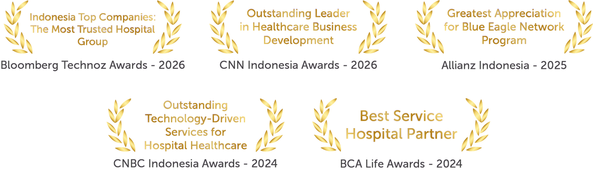

Lebih dari dua dekade mendampingi tumbuh kembang 200.000+ anak Indonesia, yang didukung dokter anak subspesialis multidisiplin yang bekerja dalam satu alur penanganan.


Pilih keluhan di bawah, kami arahkan langsung ke layanan dan dokter yang tepat.
Pilih kelompok area layanan untuk melihat profil dokter dan ketersediaannya di setiap lokasi.
| Kategori Layanan Utama | Antasari | Saharjo | Duren Tiga | Taman Mini | Depok | Tangerang |
|---|---|---|---|---|---|---|
| Kesehatan Dasar & Pertumbuhan | ✓ | ✓ | ✓ | ✓ | ✓ | ✓ |
| THT, Kulit, Alergi, Mata & Gigi Anak | ✓ | ✓ | ✓ | ✓ | ✓ | ✓ |
| Bedah & Tulang Anak | ✓ | ✓ | ✓ | ✓ | ✓ | ✓ |
| Organ Dalam | ✓ | ✓ | – | ✓ | – | – |
| Perawatan Neonatal (NICU) | ✓ | ✓ | ✓ | ✓ | – | ✓ |
✓ Tersedia di lokasi ini · Abu-abu belum tersedia. Ketuk nama kelompok layanan untuk melihat dokter dan jadwalnya.
Perjalanan menjaga imunitas, memantau pertumbuhan, hingga memastikan perkembangan kognitif dan motorik si kecil berada di jalur yang optimal.
Evaluasi berkala tinggi, berat, lingkar kepala, dan pencapaian milestone sesuai usia anak.
Anak belum bicara sesuai usia, belum berjalan, atau tertinggal dari tahapan yang seharusnya.
Evaluasi perkembangan otak usia dini, termasuk kondisi yang berkaitan dengan kesehatan neuroimun.
Kejang demam, kejang berulang, dan keluhan saraf lain yang memerlukan evaluasi khusus.

Mendalami perkembangan otak usia dini dan neuroimun. Menjawab pertanyaan kritis: apakah keterlambatan anak wajar atau butuh intervensi.

Tiga dekade merawat anak dengan pendekatan hangat berorientasi keluarga, dari pencegahan hingga pemantauan jangka panjang.

Ahli dalam menangani masalah saraf anak, evaluasi kejang, dan deteksi gangguan fungsi neurologis pada fase perkembangan.

Pemulihan anak berbeda dari orang dewasa — terapinya harus mengikuti tahap perkembangan, bukan sekadar mengembalikan fungsi. dr. Lestaria adalah Konsultan Rehabilitasi Medik dengan pendalaman pediatrik, lulusan Universitas Indonesia. Menangani pemulihan pasca-cedera dan patah tulang hingga terapi bicara, terapi okupasi, dan terapi memori — program yang menjadi kunci bagi anak dengan keterlambatan perkembangan.

Ahli diagnostik EEG, manajemen kejang, dan penilaian perkembangan saraf anak. Aktif menyusun panduan neurologi anak melalui IDAI.
Batuk, pilek, sesak, dan demam berulang — dari infeksi ringan hingga pneumonia yang memerlukan perawatan.
Gagal tumbuh dan penilaian status gizi menyeluruh, disertai rencana perbaikan nutrisi yang terukur.
Evaluasi pola makan dan penyebab di baliknya, termasuk faktor medis yang sering terlewat.
Diare akut maupun berulang, muntah, sembelit, dan keluhan pencernaan lain pada anak.


Salah satu dari sedikit subspesialis nutrisi dan penyakit metabolik anak di Indonesia. Menangani kondisi metabolik umum maupun langka, serta perencanaan nutrisi untuk mendukung tumbuh kembang.
Evaluasi anak yang tinggi badannya tertinggal dari kurva pertumbuhan seusianya.
Tanda pubertas yang muncul terlalu awal atau belum muncul pada usia yang seharusnya.
Penilaian berat badan berlebih beserta risiko metabolik yang menyertainya.
Penanganan gangguan hormon yang memerlukan pemantauan jangka panjang.
Evaluasi siklus haid yang tidak teratur, terlambat, atau berhenti, termasuk penelusuran penyebab hormonalnya.

Salah satu dokter-ilmuwan paling dihormati di bidang endokrinologi anak di Indonesia. Dengan pengalaman hampir dua dekade, dr. Frida memadukan ketelitian akademis dan keunggulan klinis untuk menangani kondisi terkait hormon pada anak — perawakan pendek, pubertas dini, gangguan tiroid, hingga diabetes tipe 1. Beliau memegang posisi kepemimpinan di berbagai organisasi profesi dan konsisten mengadvokasi deteksi dini gangguan endokrin pada anak dan remaja.

Dokter Spesialis Anak dengan subspesialisasi Endokrinologi dan gelar Doktor. Menangani gangguan hormon dan pertumbuhan pada anak — dari perawakan pendek dan gangguan pubertas hingga kelainan metabolik yang memerlukan pemantauan jangka panjang.
Merancang strategi penanganan jangka panjang diabetes tipe 1 dan pubertas.
Seluruh imunisasi wajib sesuai jadwal rekomendasi Ikatan Dokter Anak Indonesia (IDAI), dari bayi baru lahir hingga usia sekolah.
Vaksin di luar program dasar yang direkomendasikan sesuai kondisi dan kebutuhan anak.
Penyusunan ulang jadwal bagi anak yang imunisasinya sempat tertinggal, tanpa perlu mengulang dari awal.
Pemeriksaan kondisi anak sebelum vaksin diberikan, termasuk penjelasan efek samping yang wajar.
dr. Diah Pramita, Sp.A | dr. Harsya Pradana Loeis, Sp.A | dr. Harun Arrasyid Rydha Albar, M.Kes, Sp.A | dr. Irma Rochima Puspita, Sp.A | dr. Margareta Komalasari, Sp.A | dr. Natia Anjarsari W, Sp.A | dr. Reza Abdussalam, Sp.A | dr. Sander D. Teddy, Sp.A.
dr. Ari Prayogo, Sp.A | dr. Nathalia Ningrum, Sp.A, AIFO-K | dr. Dhika Claresta, Sp.A | dr. Nadia Qoriah Firdausy, M.Sc, Sp.A | dr. Ridha Kurnia Tejasari, M.Kes, Sp.A | dr. Karina Faisha, Sp.A | dr. Fitria Mayasari, Sp.A | dr. Febiona Tyfanie, Sp.A | dr. Dyah Istikowati, Sp.A.
dr. Gendis, Sp.A | dr. Velanie Frida Batubara, Sp.A | dr. Lucky Yogasatria, Sp.A | dr. Tania Paramita, Sp.A | dr. Rizky Amrullah Nasution, Sp.A | dr. Desrinawati, Sp.A.
dr. Diana Mustika Chandra, Sp.A | dr. Annisa Nur Aini, Sp.A.
dr. Nadine Shakina Tabit, Sp.A, M.Kes | dr. Ambarsari Sri Nirmaladewi, Sp.A | dr. Dwi Kartika, Sp.A | dr. Indah Dina Maritha, Sp.A | dr. Stephanie Amanda, Sp.A | dr. Baitil Atiq, Sp.A.
dr. Galih Linggar Astu, Sp.A | dr. Iqbal Alamsah, Sp.A | dr. Lusiana Kartini Ningsih, Sp.A | dr. Masyitha, Sp.A | dr. Nanang Kusdiyan, Sp.A | dr. Pamela Kartoyo, Sp.A | dr. Prima Evita Juwitasari, Sp.A.
Pusat penanganan keluhan umum yang sering mengganggu kenyamanan keseharian anak: dari telinga, hidung, tenggorokan, mata, gigi, hingga kulit sensitif dan alergi.
Anak rewel, menarik telinga, demam berulang. Otoskopi, terapi, hingga pemasangan grommet.
Anak mendengkur, bernapas lewat mulut. Tonsilektomi dengan anestesi yang aman untuk anak.
Anak terlambat bicara. Pemeriksaan OAE, BERA, dan audiometri anak.
Ekstraksi aman dengan peralatan endoskopik untuk benda kecil yang masuk telinga/hidung.

Dengan pengalaman 13+ tahun, dikenal punya cara yang lembut dan komunikatif membuat anak lebih kooperatif saat pemeriksaan THT.

Terampil menggunakan peralatan diagnostik terkini dengan pendekatan yang meminimalkan rasa tidak nyaman bagi anak.

Menghadirkan standar bedah THT internasional (FICS) untuk keluhan hidung dan sinus anak di area Depok.

Pendekatannya cermat dan komunikatif — memastikan orang tua memahami kondisi anak sebelum memutuskan tindakan.

Menangani infeksi telinga, masalah sinus, dan alergi hidung pada anak, dengan fokus menjaga fungsi pendengaran, penciuman, dan pernapasan tetap optimal.

Diagnosis dan penanganan kondisi THT anak, mulai dari infeksi telinga dan masalah sinus hingga gangguan menelan dan suara.

Konsultan Laring-Faring. Menangani gangguan suara (foniatri) dan gangguan menelan (disfagia), termasuk endoskopi laring dan rehabilitasi suara.

Berfokus pada gangguan pendengaran, sinusitis, alergi pernapasan, serta keluhan tenggorokan dan suara pada anak.
Menangani keluhan telinga, hidung, dan tenggorokan pada anak di Brawijaya Tangerang.
Menangani keluhan telinga, hidung, dan tenggorokan pada anak di Brawijaya Antasari.
Kulit kering, gatal, dan kemerahan berulang yang mengganggu tidur anak.
Bentol gatal yang muncul mendadak, termasuk pencarian faktor pemicunya.
Ruam yang tidak kunjung membaik dan infeksi kulit yang umum pada bayi.
Penanganan jerawat pada masa pubertas, dari perawatan dasar hingga kasus yang membandel.

Kompetensi kuat merawat kondisi kulit sensitif dan eksim pada bayi.

Pendekatan ramah membantu keluarga menerapkan perawatan kulit harian.

Mencari tahu mengapa sistem kekebalan bereaksi berlebihan dan memetakan alergi.

Lebih dari 19 tahun praktik klinis dengan spesialisasi dermatologi anak, didukung fellowship FINSDV dan FAADV.

Keahlian khusus dalam menangani kasus alergi kompleks dan gangguan sistem kekebalan tubuh pada anak.
Pemeriksaan tajam penglihatan untuk menemukan rabun yang belum disadari.
Evaluasi dan penanganan posisi mata yang tidak sejajar.
Penanganan penurunan fungsi penglihatan pada satu mata yang perlu dikoreksi sejak dini.

Kompetensi unggul mendeteksi kelainan refraksi sedini mungkin guna mencegah mata malas.

Pendekatan hangat dan interaktif saat skrining mata balita hingga remaja.
Kontrol berkala mencegah kerusakan dan radang gusi.
Penambalan yang ramah anak (pain-free dentistry) untuk gigi susu dan tetap.
drg. Nila, Sp.KGA | drg. Tri Julianti, Sp.KGA | drg. Kusuma Pritta, Sp.KGA.
drg. Maryciela E., Sp.KGA | drg. Erni S., Sp.KGA | drg. Ulya A., Sp.KGA.
T.Mini: drg. Yunita, drg. Annisa, drg. Noor. | Depok: drg. Sekar Palupi.
Kondisi anatomi dan pembedahan pada anak memerlukan teknik khusus yang memperhitungkan struktur tubuh yang masih dalam tahap pertumbuhan awal.
Penanganan cacat lahir pada saluran cerna dan dinding perut.
Usus buntu (apendisitis) anak, hernia, dan penyumbatan usus.
Kasus saluran cerna yang memerlukan tindakan bedah segera secara presisi.

Menangani spektrum penuh bedah pediatrik, dari kelainan bawaan hingga gawat darurat.

Keahlian prosedur minimal invasif (laparoskopi), hernia, dan trauma.

Prosedur minimal invasif seperti laparoskopi apendektomi, penanganan hernia, luka infeksi dan trauma, hingga koreksi kelainan bawaan.

Menangani tindakan bedah anak dari bayi baru lahir hingga remaja — apendektomi, herniotomi, sirkumsisi, serta bedah saluran cerna dan organ dalam.

Bedah anak untuk kelainan bawaan, tumor pada anak, dan kondisi darurat, termasuk koreksi saluran cerna, urologi anak, dan trauma.

Menangani kondisi bedah bawaan maupun didapat pada anak: kelainan organ dalam, kegawatdaruratan, dan koreksi kelainan fisik tertentu.

Evaluasi dan tindakan bedah anak untuk kelainan bawaan, gangguan saluran cerna dan saluran kemih, benjolan, dan trauma — dari pemeriksaan awal hingga pemantauan pascaoperasi.
Kaki O, kaki X, dan gangguan berjalan yang memerlukan evaluasi tulang.
Kelainan panggul dan deformitas ekstremitas sejak lahir.
Penanganan fraktur dengan mempertimbangkan lempeng pertumbuhan.

Mendalami rekonstruksi deformitas kaki bengkok dan patah tulang anak, memastikan tulang sembuh selaras pertumbuhannya.

Penanganan cedera fisik, patah tulang, serta keluhan gerak sendi pada anak dengan presisi medis.
Rehabilitasi medik anak untuk gangguan gerak dan fungsi, mendampingi pemulihan pasca cedera maupun tindakan ortopedi.
Pemeriksaan ultrasonografi untuk bayi dan anak, termasuk USG bedside di ruang rawat dan NICU tanpa perlu memindahkan pasien.
Dukungan pencitraan untuk perencanaan dan evaluasi tindakan bedah maupun kelainan tulang pada anak.
Pembacaan dan penjelasan hasil pemeriksaan bersama dokter yang merawat, agar orang tua memahami langkah berikutnya.

Konsultan pencitraan anak dengan fokus pada ultrasonografi bedside untuk perawatan neonatal dan pediatrik. Memimpin inisiatif edukasi klinis nasional NeoPIN.
Layanan diagnostik dan terapeutik lanjutan untuk kondisi spesifik pada organ vital anak yang membutuhkan pengawasan subspesialis konsultan.
Kelainan struktur sejak lahir, termasuk deteksi dini.
Evaluasi bunyi jantung tidak normal saat pemeriksaan rutin.

Memastikan temuan murmur jantung dievaluasi dengan tepat — fisiologis atau kelainan yang perlu ditindaklanjuti.

Konsultan Jantung Anak lulusan Universitas Indonesia yang menangani penyakit jantung dan pembuluh darah pada bayi, anak, hingga remaja — mencakup kelainan jantung bawaan, penyakit jantung rematik, aritmia, dan gangguan tekanan darah.

Mendalami intervensi dan pemantauan jangka panjang ekokardiografi. Latar belakang akademisnya memastikan setiap keputusan penanganan berpijak pada penelitian ilmiah terkini.

Ketika kelainan jantung bawaan memerlukan tindakan bedah, anak tidak perlu dirujuk keluar. Dr. dr. Budi Rahmat adalah Dokter Spesialis Bedah Kardiotoraks dan Vaskular dengan gelar Konsultan di bidang Bedah Jantung Pediatrik & Kongenital, menangani koreksi kelainan struktur jantung pada bayi dan anak. Kehadirannya melengkapi alur penanganan jantung anak di Saharjo: dari diagnosis oleh kardiolog anak hingga tindakan bedah, seluruhnya dalam satu atap.
Diagnosis, pengendalian gejala, dan rencana terapi jangka panjang.
Berlangsung lebih dari dua minggu dan butuh evaluasi penyebab.

Berfokus pada asma dan batuk kronis agar anak bisa aktif tanpa sesak.
Mendiagnosis infeksi saluran napas bawah, pneumonia, dan kelainan paru. Mampu melakukan bronkoskopi untuk evaluasi saluran napas langsung.
Konsultan respirologi anak yang menangani asma, sesak berulang, dan gangguan pernapasan kronis pada anak.
Muntah berulang dan diare kronis yang tidak kunjung membaik dengan penanganan biasa.
Konstipasi, perut kembung, dan nyeri perut berulang pada anak.
Nafsu makan menurun dan berat badan turun yang berkaitan dengan masalah saluran cerna.
Kuning pada mata atau kulit, BAB berdarah, dan muntah darah yang memerlukan evaluasi hati, empedu, serta pankreas.

Menangani gangguan saluran cerna, hati, empedu, dan pankreas anak: muntah berulang, diare kronis, konstipasi, nyeri perut, hingga kuning pada mata atau kulit.

Evaluasi klinis menyeluruh pada anak dengan komplikasi penyakit sistemik dan cerna.
Tata laksana komprehensif, mulai dari diagnosis awal hingga terapi pemeliharaan berkelanjutan.
Penanganan tumor padat secara terpadu, seperti kanker otak, tulang, otot, dan neuroblastoma.
Pemberian kemoterapi yang disesuaikan secara aman (melalui infus, suntikan, maupun obat oral).
Evaluasi kelainan darah kronis serta skrining edukasi untuk gejala awal keganasan pada anak.

Dokter Spesialis Anak Konsultan Hematologi Onkologi yang berdedikasi khusus pada penanganan kasus kanker dan kelainan darah pada anak-anak. Layanan beliau berfokus pada tata laksana komprehensif untuk kanker darah (leukemia) dan kanker padat (seperti kanker otak, tulang, dan otot). Beliau juga menyediakan layanan tindakan kemoterapi anak, edukasi skrining deteksi dini gejala kanker pada anak, serta manajemen nutrisi spesifik bagi pasien anak dalam masa terapi.

Ahli kanker anak dan gangguan pendarahan, lulusan FKUI-RSCM. Berperan dalam memajukan perawatan hemofilia dan onkologi anak di tingkat nasional.
Unit Perawatan Intensif Neonatal khusus menangani kondisi kritis bayi di jam-jam pertama kehidupan dengan standar medis darurat tinggi.
Perawatan intensif dan pemantauan fungsi vital di inkubator.
Evaluasi dan tata laksana darurat berbasis bukti ilmiah.

Perawatan bayi baru lahir kritis, prematur, berat badan lahir rendah, dan kelainan bawaan yang memerlukan perawatan intensif di NICU.

Subspesialis Neonatologi. Merawat bayi baru lahir, terutama yang lahir prematur atau dengan kondisi medis serius yang menuntut respons cepat.

Pemantauan tumbuh kembang, pencegahan penyakit, dan penanganan kondisi medis anak, dengan keahlian tambahan di perawatan intensif neonatal (NICU).

Pemantauan tumbuh kembang menyeluruh, imunisasi, dan penanganan penyakit anak berbasis bukti, dengan penekanan pada edukasi nutrisi dan pola asuh.

Lebih dari 18 tahun pengalaman di Jakarta. Memadukan pemantauan tumbuh kembang, panduan nutrisi, program vaksinasi, dan keahlian perawatan kritis.

Konsultan neonatologi untuk bayi usia 0–28 hari yang kritis atau berisiko tinggi — prematur, berat badan lahir rendah, hingga gangguan fungsi organ.
Lingkungan rumah sakit sering menakutkan bagi anak. Kami berupaya membuat setiap kunjungan terasa seaman dan senyaman mungkin.
Menangani pasien anak menuntut lebih dari keahlian medis — dibutuhkan kesabaran, cara berkomunikasi yang tepat, dan kemampuan membuat anak merasa aman selama pemeriksaan.
Ketika kondisi anak melibatkan lebih dari satu bidang, subspesialis kami berkoordinasi dalam satu alur penanganan — orang tua tidak perlu mengulang cerita dari awal di setiap poli.
Unit intensif bayi dan anak (NICU & PICU) berstandar teknologi terkini, ruang rawat yang dirancang agar keluarga dapat mendampingi dengan nyaman, serta kamar operasi dengan protokol yang disesuaikan untuk pasien anak.
Didukung oleh lebih dari 600 dokter umum, spesialis, dan subspesialis — termasuk profesor dan konsultan klinis — kami menghadirkan pelayanan medis berstandar internasional.

600+ dokter terkurasi melalui credentialing ketat.

Hybrid OR, Cath Lab, MRI, dan teknologi unggulan.

1.000+ perawat dan staf terlatih ramah & personal.

6 RS di lokasi strategis Jakarta, Tangerang, Depok.

Akreditasi bintang 5 LAM-KPRS.


Fasilitasnya bersih, modern, dan tertata rapi. Saya benar-benar merasa diperhatikan sejak kedatangan.
Dokter Penanggung Jawab selalu visit dan komunikatif. Perawat IGD responsif, security pun helpful menjaga keamanan selama perawatan.
Selalu jadi pilihan utama saat keluarga sakit. MasyaAllah, makanannya enak dan variatif — anak juga suka sekali.
Gak nyangka di luar ekspektasi — ruangan VIP berasa suite, dan seluruh tim sangat helpful, sabar, dan gercep.
Lingkungannya bersih, nyaman, dan tertata rapi. Suasananya tetap tenang meskipun sedang berobat.
Dokter sangat sabar menjelaskan kondisi anak saya. Sebagai orang tua, kami merasa jauh lebih tenang dan lega.
Jl. Pangeran Antasari No.1A, RT.3/RW.1, Cipete Utara, Kec. Kebayoran Baru, Kota Jakarta Selatan, DKI Jakarta 12150
🧭 Lihat di Google MapsJl. Dr. Saharjo No.199, RT.1/RW.1, Tebet Barat, Kec. Tebet, Kota Jakarta Selatan, DKI Jakarta 12810
🧭 Lihat di Google MapsJl. Raya Tembakau Tambun No.1, RT.4/RW.2, Pinang Ranti, Kec. Makasar, Kota Jakarta Timur, DKI Jakarta 13560
🧭 Lihat di Google MapsJl. Duren Tiga Raya No.28, RT.4/RW.1, Duren Tiga, Kec. Pancoran, Kota Jakarta Selatan, DKI Jakarta 12760
🧭 Lihat di Google MapsJl. Raya Jakarta-Bogor No.KM.37, Jatijajar, Kec. Tapos, Kota Depok, Jawa Barat 16416
🧭 Lihat di Google MapsJl. KH. Hasyim Ashari No.24, RT.001/RW.004, Buaran Indah, Kec. Tangerang, Kota Tangerang, Banten 15119
🧭 Lihat di Google MapsPusat pelayanan anak lengkap: satu tim, satu alur penanganan — dari imunisasi rutin hingga subspesialis dan NICU. 90+ dokter untuk anak di enam lokasi Jakarta, Depok, dan Tangerang, siap mendampingi sejak keluhan pertama.